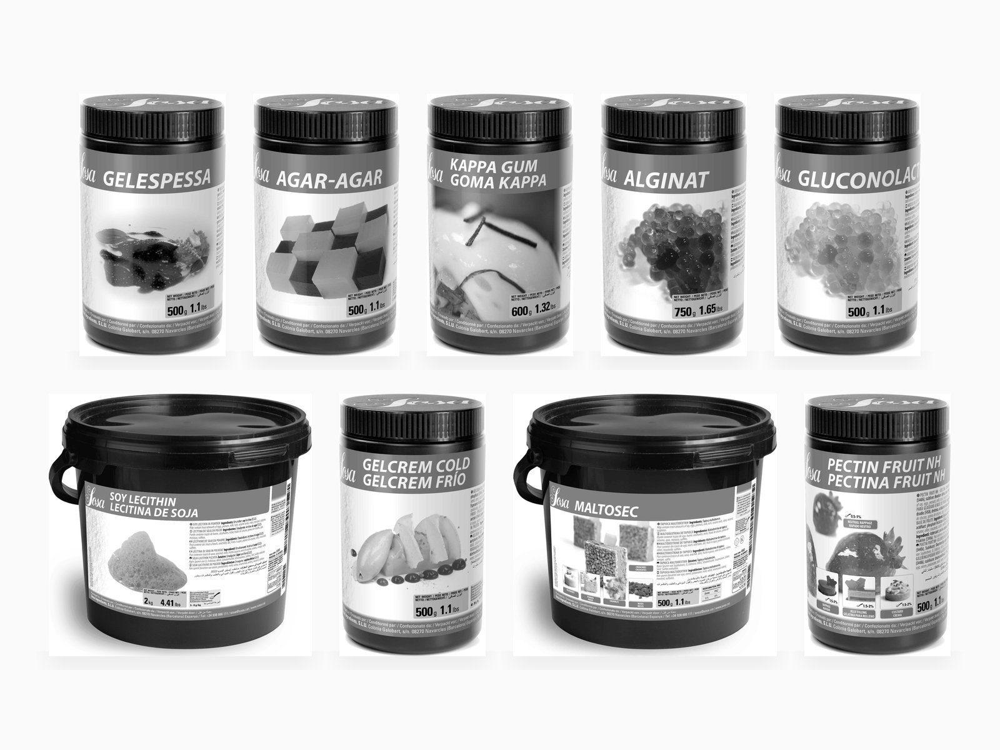
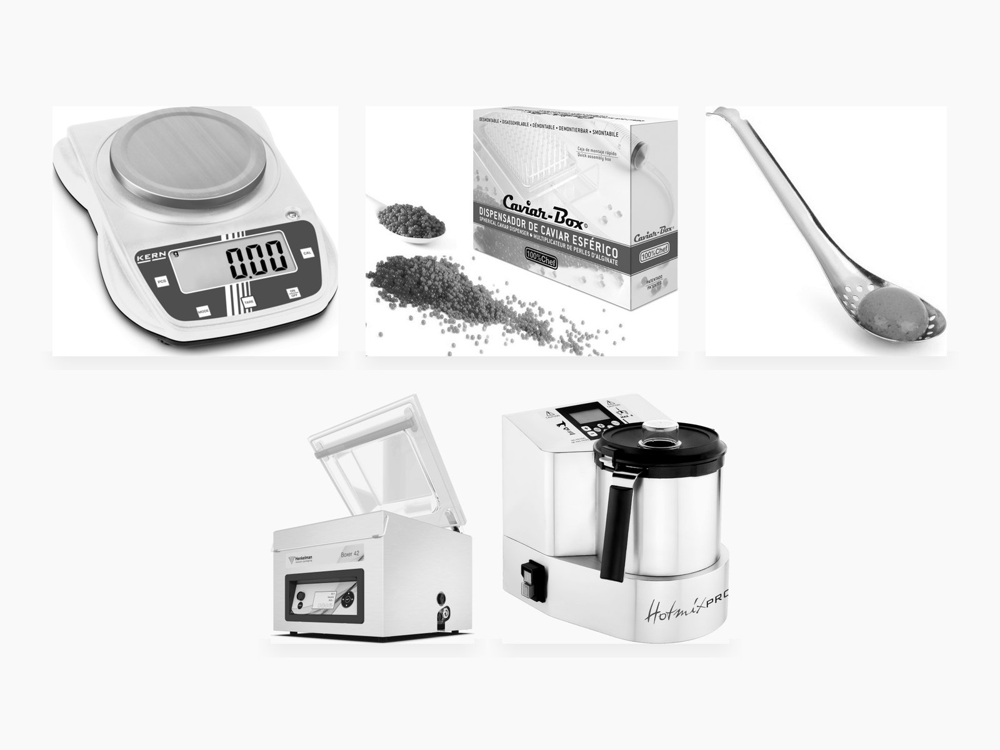
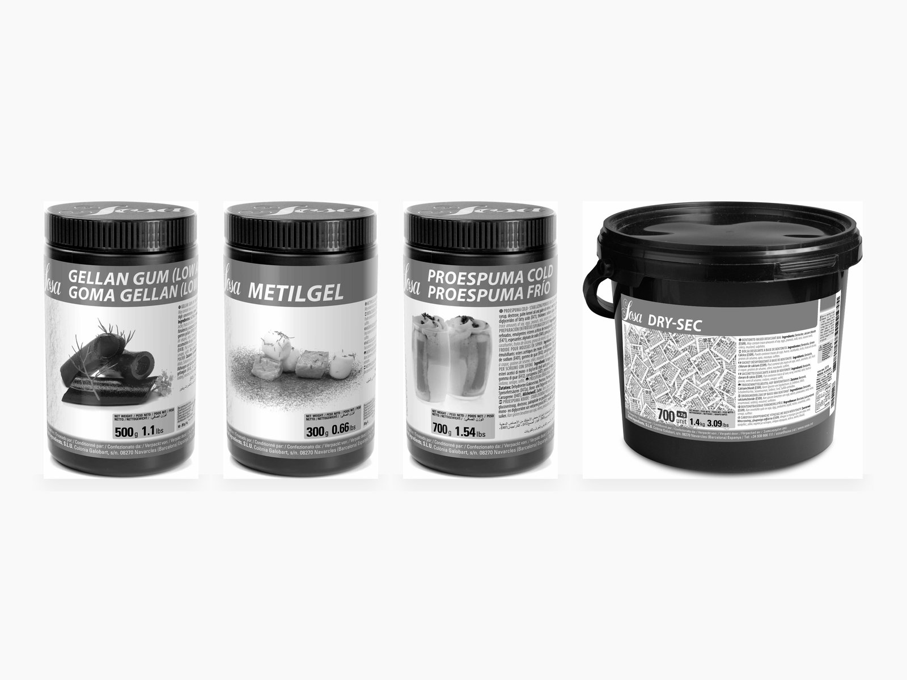

At 40 metres carry nine powders that each do three jobs and five tools that do the rest; from 60 metres widen the store, not the doses; above 90 you can afford a corner that behaves like a lab, and the rules that come with it.
This page lists what to carry for modern technique by the length of the boat, because the length sets the brigade, the power and the locker. The products are Sosa's, the range most Mediterranean galleys can actually buy, each with Sosa's own dose; the tools are named by model with the maker's weight and power, because on a boat those are the price. Every dose and every weight below was read on the maker's own sheet on 7 November 2026; what a maker does not state is marked so.
Nine lockers; each tile opens one.
The rule of the locker
The store scales with the brigade, not with the guests.
A 40-metre yacht carries eight to twelve crew and, in the trade's own staffing guides, one chef; an 80-metre carries 25 to 35, with a chef, a sous-chef and two galley assistants. The guest count barely moves between them. So the dry store grows with the hands available to use it, not with the mouths to feed: at 40 metres you are alone with the siphon between breakfast and lunch; at 80 someone can spend a morning on spheres. Four tests decide what comes aboard at any length.
- Three jobs or no berth. Gelespessa thickens, stabilises and holds solids in suspension; a powder that does one trick waits for the bigger boat.
- A dose you can look up. Sosa prints a range on every tub's page; the free Khymos collection gives the same for any brand. If the number lives only in your memory, it fails at 23:00 in a seaway.
- It survives the climate. Sosa's own storage line is under 60 per cent humidity and 15 to 25 °C; a Caribbean galley in August is neither, so the tubs are small and the sachets go in.
- It fits the power. Every machine below carries its watts and its voltage versions, because a 2,000 W bath and a 1,500 W Pacojet on one ring of a 40-metre galley is a breaker you meet at service.
40 metres: the dry store
Nine tubs that cover the gels, the spheres, the airs and the powders, each with a dose from Sosa's own sheet.
Buy the 500-gram tubs: one lasts a season, and a half-used kilo in a humid locker is money turned to stone. Doses are Sosa's, per kilo of liquid, and are where you start; the first batch on a new boat is the test.

| Tub | What it does aboard | Dose |
|---|---|---|
| Gelespessa xanthan + maltodextrin | Thickens hot or cold with no heat; holds herbs up in a vinaigrette; steadies a foam or a sauce that wants to split | 6–15 g/kg |
| Agar-Agar | A gel that sets near 40 °C and holds to 70–80 °C: fluid gels, cold-oil pearls, sliceable jellies; does not survive the freezer | 2–15 g/kg |
| Kappa Gum carrageenan | The fast, firm coating gel, setting under 60 °C: glazes, brittle sheets, a skin on a cold cream | 1–10 g/kg |
| Alginate sodium alginate | The bath for reverse spheres, in mineral water; on its own a thickener | 5 g/kg |
| Gluconolactate | The calcium that goes into the purée for reverse spheres; tasteless | 20 g/kg |
| Powdered Soy Lecithin | Airs on a juice or a cocktail with a stick blender; a light emulsifier | 5–8 g/kg |
| Gelcrem Cold modified potato starch | A pastry cream or a thick sauce whisked into cold liquid, no stove; holds in the oven and the freezer | 41–80 g/kg |
| Maltosec tapioca maltodextrin | Turns olive oil or a nut butter into a powder that melts back on the tongue | to taste |
| Pectin Fruit NH | Fruit glazes and gels that re-melt at 40–60 °C and survive the freezer | 5–20 g/kg |
Gelatine sheets are already in every galley and stay. If your supplier stocks Texturas instead of Sosa, Algin, Gluco, Calcic and Citras are the same four chemicals under Albert and Ferran Adrià's brand.
40 metres: the kit
Five tools and a drawer of small iron, every weight from the maker's sheet.
The half-litre siphon does more dishes than anything else on this page, and it weighs less than a bottle of wine. The chamber vacuum weighs forty times as much and is still the second thing to buy.

- Two iSi Gourmet Whip, 0.5 L. 0.92 kg each, one charger per fill. One for cold, one for hot: the steel body may sit in a bain-marie at 75 °C and no hotter. The insulated Thermo Whip, 1.24 kg, keeps a foam warm for hours but must never be heated from outside.
- One immersion circulator. Sammic SmartVide 5: 3.1 kg, baths to 30 L, 1,600 W, sold in 230 V and 120 V versions. Or the Breville|PolyScience HydroPro, 1,450 W, baths to 45 L, 90 °C ceiling. One is enough until a second cook is cooking.
- One compact chamber vacuum. Sammic SU-310: 39.5 kg, 320 mm seal bar, 10 m³/h pump, 370 W, 230 V or 120 V. The heaviest object in this list and the one that earns its berth: a chamber seals liquids, compresses fruit and packs the pouches the bath will cook; an external sealer does only the last. Bolt it down.
- A 0.01 g scale beside the 0.1 g one you have. KERN EHA 500-2: 500 g capacity, 0.01 g steps, €93 before tax. At 5 g per kilo a kitchen scale cannot see the dose.
- A stick blender with a long shaft: Robot Coupe MP 350 Ultra, 440 W, 350 mm tube, 5 kg, rated for 50-litre batches; or a Bamix Gastro. Airs, fluid gels, emulsions.
- The small iron. Lotus slotted spoons; a 100% Chef Caviar Box, 13 × 18 × 5 cm, dishwasher-safe, for pearls by the hundred; 15-cavity silicone half-sphere moulds; and a box of desiccant sachets for the tubs.
60 to 90 metres: the dry store
The full Sosa texture shelf: what each tub adds that the 40-metre nine cannot do.
With a sous-chef and two assistants, the morning has room for a second technique and the store can carry the specialists: a gel that goes in the oven, an air that survives alcohol, a mousse with no egg, the crisps and freeze-dried fruit that finish a plate. Still buy by the 500-gram tub. The exception is the 3 kg Procrema and Prosorbet bases, because a Pacojet eats them.

| Tub | What it adds | Dose |
|---|---|---|
| Gellan Gum | A gel that holds in the oven and on a hot plate; the one that bakes | 10–20 g/kg |
| Iota Pro Pannacotta | A soft, elastic dairy gel: panna cotta without gelatine; not freeze-stable | 2–15 g/kg |
| Vegetable Gelling Agent | A firm, fast, elastic gel for terrines and coatings; no animal | 50 g/kg |
| Metilgel methylcellulose | The gel that sets when hot and melts when cold: hot ice creams, binders that firm up in the fryer | 20 g/L |
| Sucro Emul | Airs on alcohol and on hot liquids, where lecithin gives up | 5 g/kg |
| Natur Emul citrus fibre | A vegan emulsifier for dressings and sauces that will not split | 5–20 g/kg |
| Proespuma Cold · Hot | Siphon bases: a cold foam that holds a service; a hot foam served at 50–70 °C. Hot contains egg; Cold lists milk protein | 50–100 g/kg |
| Albuwhip · Potatowhip | Dried egg white, which Sosa rates five times as stable as fresh; the potato protein is the vegan white | 81–100 · 11–40 g/kg |
| Instangel | Cold-soluble pork gelatine: mousses with no heating step | 30–60 g/kg |
| Chlorure · Citrate | The calcium bath for direct spheres, and the citrate that rescues an acid purée | 5–10 · 1–8.5 g/kg |
| Ultratex 3 | A cold tapioca thickener that also dries into glassy crisps | 2–80 g/kg |
| Trehalose | A sugar half as sweet that keeps crisps and meringues dry | 100–300 g/kg |
| Procrema 100 · Prosorbet 100 | Ice-cream and sorbet bases for the Pacojet beaker; the Natur versions have no milk | 100 g/kg |
| Freeze-dried fruit · Crispy · Wet-proof Crispy | The finish: powders, crunch, and the cocoa-butter-coated crunch that survives a cold cream | at service |
| Air Bag | Pork rind or potato granules that puff four to five times in hot oil | as is |
Two honesties from the sheets: Proespuma Cold is sold as suitable for vegans while its ingredient list names milk protein, so read the tub, not the claim; and Kappa, Gracila and the Vegetable Gelling Agent carry no freeze-resistance figure at all, so test before you freeze.
60 to 90 metres: the kit
The machines that need a bench, a breaker and a second pair of hands.
Each of these weighs more than the whole 40-metre list and does one thing no smaller tool can. Order them in the sequence below: the first two change the menu, the rest change the day.
- Pacojet 4. 22.5 kg, 1,500 W, in 220–240 V and 100–127 V versions; a one-litre beaker filled to 0.8 L gives about ten portions. It cuts a frozen block into ice cream, sorbet or a savoury mousse without thawing it, which is why chefs on big boats name it first.
- Thermomix TM7. 8.6 kg, 2.2 L bowl, up to 2,000 W, heats to 160 °C, cooks sous vide at 40–85 °C for up to twelve hours and ferments at 37–70 °C; €1,599 in France. Here it is the sauce station; on a 40-metre it would be the circulator.
- A full chamber vacuum. Henkelman Boxer 42: 64 kg, 410 mm seal bar, 21 m³/h. Or Sammic SE-420: 57 kg, 420 mm bar, 20 m³/h. The SU-310 moves to the crew galley.
- Two circulators. Sammic SmartVide 7 or 9: 3.6 and 4.2 kg, baths to 56 L, 2,000 W each at 230 V, 120 V versions listed; both log the bath to a phone for the HACCP file.
- A blast chiller. Irinox EasyFresh Next XS: three GN 1/1 trays, 72 kg, 1 kW at 230 V, takes 10 kg from 90 to 3 °C in 90 minutes, propane refrigerant. This is what makes cook-chill a procedure instead of a hope: the pouch clock in the mise en place piece starts at 3 °C, and a fridge cannot get a hot pouch there in time.
- A dehydrator. Excalibur EXC10EL: ten stainless trays, 16 kg, 600 W, 35–74 °C, in 120 V and 220–240 V versions. Crisps through a stencil, fruit leathers, herbs dried overnight while the galley sleeps.
- Smoking Gun Pro. 0.45 kg, four AA batteries, wood chips, tea or herbs in a 25 mm chamber; $159.95. A cloche of smoke lifted at the table.
- Both scales. The 0.01 g for the texturizers and a 0.1 g bench scale to 3 kg for the bases.
Above 90 metres: the lab corner
A bench that behaves like a laboratory, and the machines that justify it.
Above 90 metres there are thirty or more crew, a pastry chef and often a second galley. Weight stops being the question; whether the technique will actually be used is. Each machine below does one thing the 60-metre kit cannot.
- HotmixPro Gastro. A 2.6 L thermal blender that heats to 190 °C, 2,850 W, 13.5 kg; at speed zero it heats without the blades turning, so it caramelises, fries and reduces on its own. The pastry chef's machine.
- Anti-Griddle. A steel plate held at −29 °C, 34.5 kg, 120 V at 8 A or 230 V at 3.3 A. Sauces frozen on one face and liquid in the middle, lollipops of purée, no nitrogen in the room.
- A second Pacojet, and the Procrema and Prosorbet bases by the 3 kg tub.
- Liquid nitrogen, under the conditions in the next section. The honest size for a galley is a 25 L non-pressurised dewar: IC Biomedical 25LD, 9.7 kg empty, 29.6 kg full, losing 0.23 L a day, drawn off with a withdrawal device at half a bar. The pressurised Cryotherm Apollo 50 weighs 85 kg full and loses about a litre a day standing still.
- A pastry dry store of its own, with its own desiccant: the crispies and the freeze-dried fruit die in a galley's humidity within weeks.
Nitrogen aboard
The litre that becomes 650 litres of gas, and the number the room must keep.
One litre of liquid nitrogen makes about 0.65 cubic metres of gas; the NIST data give 692 litres. The line below which a space counts as oxygen-deficient is 19.5 per cent. The mise en place piece runs the sum for an 8.4 m³ galley: one litre vented inside takes it to 19.3 per cent, under the line.
Watch for: a dewar in a closed store. Two per cent a day of a 50-litre dewar is a litre of liquid and some 650 litres of gas, venting into whatever room holds it, every day, whether or not anyone is cooking. The tell is none: nitrogen has no smell, and the first sign of a low-oxygen room is a cook who sits down.
So nitrogen comes aboard on four conditions: a dewar that lives in a ventilated space with an oxygen monitor, never a locker; a dewar that vents into that space and nowhere else; a supplier in the port who will refill it, arranged before the charter, not during; and one person who handles it. The distributors we could read deliver dewars of 4 to 50 litres by road, next day, in the United States; the European suppliers' pages refused the request, so ask them.
Keeping powders alive
Under 60 per cent humidity, between 15 and 25 °C, and a sachet in every tub.
The texturizers are sold dry and die wet: xanthan, alginate and the freeze-dried fruit pull water from the air, and a tub that has drawn it clumps, under-doses and finally sets in the jar. Sosa prints the same line on its gelling agents.
"Shelf life after opening is 24 months. Dry place (humidity under 60 per cent). Temperature between 15 °C and 25 °C. Protect from light and odours."
A galley at anchor in August is not that room, so the practice is this. Decant each powder into a small airtight tub with a Dry Sec sachet, and write the dose and the opening date on the lid. Keep the spherification set together, alginate, calcium and citrate, because a purée under pH 4 will not set without the citrate. Treat the crispies and the freeze-dried fruit as fresh goods: Sosa gives them about fifteen days once open, even with a sachet. And buy the tubs you will finish in a season, which on a 40-metre is the 500-gram size of everything.
What to order first
Where the money goes, in the order it should.
At 40 metres: the two siphons and their chargers, the nine tubs, the 0.01 g scale. That is a few hundred euros and most of the plates in the techniques piece. Then the circulator, then the compact chamber when budget and bench allow. From 60 metres: the Pacojet before the Thermomix, the blast chiller before the dehydrator, the full shelf in 500-gram tubs and the bases by the 3 kg. Above 90: the dewar last, after the room, the monitor and the supplier.
Sosa has no shop of its own; it sells through distributors. The fullest ranges online are HB Ingredients in the UK, Patissland in France, WebstaurantStore in the United States, Redmond Fine Foods in Ireland and Gourmet-Versand in Germany. Order a season ahead of a Caribbean winter; none of them is in Antigua.
Sources
Richardson, C. 'How Much Does a Yacht Crew Cost?', Yachtbuyer, updated 27 October 2026: crew numbers by length overall (40–50 m, 8–12; 60–70 m, 15–20; 80–100 m, 25–35; 100 m and above, 30 or more) and the 50 m and 80 m staffing case studies. Read 7 November 2026.
Sosa Ingredients, product pages at sosa.cat/en/product/ (Dosage, Hydration, Temperature resistance, Freeze resistance, Format, Ingredients, Remarks), read 7 November 2026, for every dose, pack size and storage line printed above: gelespessa, agar-agar, kappa-gum, alginate, gluconolactate, powdered-soy-lecithin, gelcrem-cold, maltosec, pectin-fruit-nh, gellan-gum, iota-pro-pannacotta, vegetable-gelling-agent, metilgel, sucro-emul, natur-emul, proespuma-cold, proespuma-hot, albuwhip, potatowhip, instangel, chlorure, citrate, ultratex-3, trehalose, procrema-100-cold, prosorbet-100-cold, raspberry-crispy-2-10mm, raspberry-crispy-wet-proof, freeze-dried-whole-raspberry, airbag-pork-flour, airbag-potato-granules, dry-sec. Sosa, Texture Wheel for Gastronomy, v. 3, July 2026; Food Service Catalogue 2023, p. 134; Pectins booklet, 2024. Lersch, M. (ed.) (2014). Texture: A hydrocolloid recipe collection, v. 3.0, khymos.org.
iSi Culinary, product catalogue, English, 2026 (Gourmet Whip 0.5 L and 1 L, Thermo Whip 0.5 L: weights, dimensions, chargers per fill, bain-marie limit); iSi, Gourmet Whip instructions for use. Sammic, specification sheets: SmartVide 5, 7 and 9; SU-310; SE-420. Breville|PolyScience, HydroPro CSV700 (breville.com) and HydroPro Plus CSV750 sheet; Smoking Gun Pro CSM700 sheet; Anti-Griddle CAG700 sheets (US and ANZ) and user manual. Henkelman, Boxer series, henkelman.com. Pacojet, Pacojet 4 user manual, April 2024, and pacojet.com. Vorwerk, Thermomix TM7 technical specifications and energy consumption (service.thermomix.com); vorwerk.com/fr product page; TM6 instruction manual (UK). Excalibur, EXC10EL specification sheet. KERN & Sohn, EHA 500-2 product page; FCB 3K0.1 datasheet. Robot Coupe, MP 350 Ultra product page. Bamix, Gastro PRO-3 listing. Irinox, EasyFresh Next brochure and EasyFresh Next XS datasheet. HotmixPro, Gastro product page. Cryotherm, APOLLO datasheet. IC Biomedical, LD series dewars brochure, 2025. WestAir Gases, liquid nitrogen dewars page. 100% Chef, Caviar Box and Lotus spoon pages; 100% Chef catalogue 8. Silikomart SF005, dealer listing. All read 7 November 2026.
European Industrial Gases Association (2018). Hazards of Oxygen-Deficient Atmospheres, Doc 44/18. NIST Chemistry WebBook, SRD 69, nitrogen. 29 CFR 1910.134(b). Food Standards Agency (2016). Guidance on the safety and shelf-life of vacuum and modified atmosphere packed chilled foods with respect to non-proteolytic Clostridium botulinum, paragraph 19.
Sosa Ingredients SLU, about page and contact page (sosa.cat); capital-riesgo.es, 'Meridia Private Equity I exits Sosa', 29 April 2021. Stockists: hbingredients.co.uk, patissland.fr, webstaurantstore.com, redmondfinefoods.ie, gourmet-versand.com, read 7 November 2026.
Not verified, and marked so above: the Bamix Gastro wattage and the Excalibur 9-tray figures (dealer-stated; both makers' sites throttled the request); the HydroPro's weight; the TM7's voltage versions; the Anti-Griddle's wattage; the Pacojet portion count (distributor); the Silikomart mould figures (dealer); European liquid-nitrogen delivery terms (Air Liquide and BOC pages unreachable). Proespuma Cold's vegan claim conflicts with its ingredient list and is reported as such. Product images, where shown, are the makers' own, reproduced to illustrate the products reviewed.
Have a technique or a question? Share it.
Join the conversation